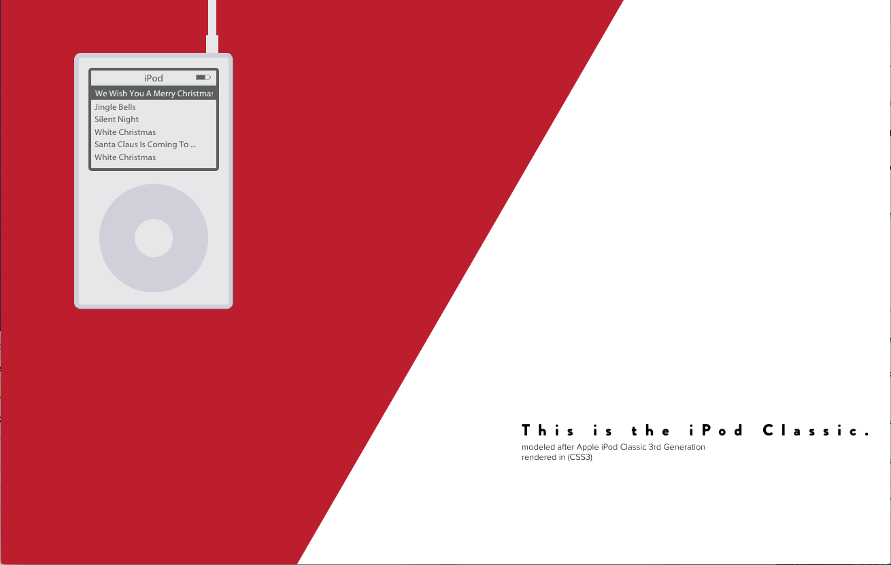

iPod Classic CSS3 (2017)
Creative Coding, Internet Art
CSS3, HTML5
A rendering of the iPod Classic using CSS3 and HTML5.

CSS3 has become more powerful and an increasing number of "CSS Artists" have taken to using it to create stunning graphics. The iconic iPod Classic and its visually striking details are modeled here using Cascading Style Sheets.
The @font-face is brandon-grotesque and Myriad, closely related to Apple's proprietary "Podium Sans". The multiple borders and overall structure of the iPod is an effect of applying box-shadow and border-radius. The deprecated HTML marquee tag simulates the animation of a current song playing.
The song menu is constructed by playing around with padding, margin, and background. The circular click wheel is an effect due to border-radius set at 50%, the button has the same effect, positioned relatively to the wheel and transformed to center both horizontally and vertically.